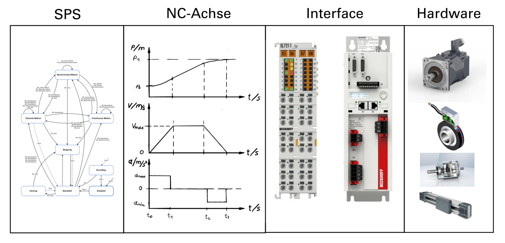
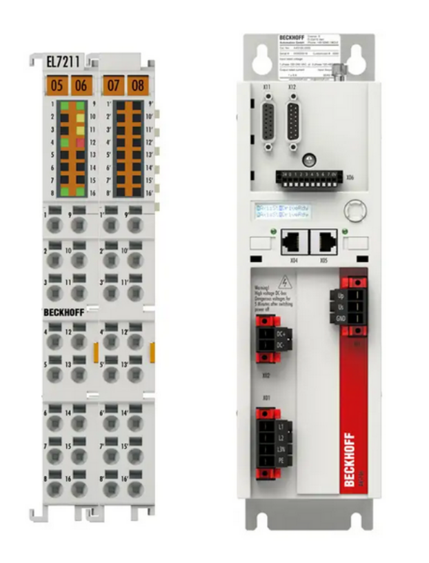
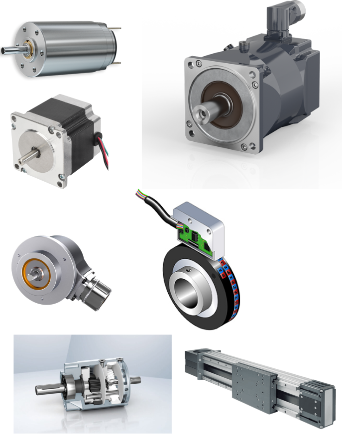
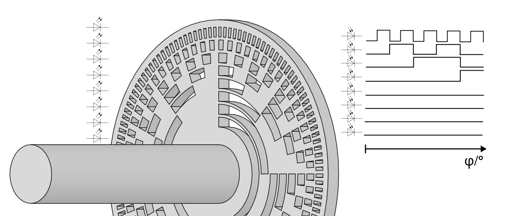

SoSe 2024 Serafin Kollegger & Julian Huber
Motorsteuerung
TwinCAT Motion Baukasten Tc2_Mc2 Motion-Bibliothek Beispiel Förderband

Grundlagen zur Motorsteuerung

Ebenenansicht der Motorsteuerung

TwinCAT Motion Baukasten

Applikationsebene
Die Bewegungsarten der Tc2_Mc2 sind gemäß den Spezifikationen von PLCopen-motion-control gestaltet und umfassen drei Kategorien:
- Kontinuierliche Bewegung: Diese wird durch Geschwindigkeitseingaben definiert.
- Diskrete Bewegung: Diese wird durch Positions- oder Zeitangaben definiert.
- Synchronisierte Bewegung: Diese wird durch die Bewegung der Master-Achse definiert.
Die Unterschiede zwischen diesen Kategorien liegen in ihren erforderlichen Steuereingängen. Zusätzliche Eingaben wie maximale Geschwindigkeiten, Beschleunigungen und Bewegungsrichtung ergänzen die Definition der Bewegung.
Kontinuierliche Bewegung
MC_MoveVelocity


Diskrete Bewegung
MC_MoveAbsolute


Diskrete Bewegung
MC_MoveRelative


Achsen Referenz (Axis_Ref)
- Der Datentyp AXIS_REF enthält Information zu einer Achse. AXIS_REF ist eine Schnittstelle zwischen der SPS und der NC und wird den MC-Funktionsbausteinen als Referenz auf eine Achse mitgegeben.
- Dieser Eingang ist keine gewöhnliche Variable, sondern eine In_Out-Variable.
- Dadurch werden Daten des Datentyps Axis_Ref empfangen und ausgegeben.
- Dies ermöglicht eine bidirektionale Kommunikation mit der NC-Achse, wie in oben stehender Abbildung des Ebenenmodells zwischen SPS-Task und NC-Task dargestellt.
- Jede Achse in der Anlage erhält eine individuelle Achsenreferenz. Dadurch kann jede Achse eindeutig durch den Aufruf eines Bewegungsbausteins angesteuert werden
Zustandsdiagramm der Tc2_Mc2

Organisationsbausteine der Tc2_Mc2
MC_Power MC_Reset


NC-Achsenebene
Achsen Konfiguration

Parameter der Achse
- Bezugsgeschwindigkeit
- Max. Geschwindigkeit, Beschleunigung, Verzögerung
- Normal Beschleunigung, Verzögerung, Ruck
- Manuele Beweungsparameter und Homing (Referenzfahrten)
- Endlagenüberwachung Software
- Überwachungsparameter (Schleppabstand, Positionsbereichsüberwachung)
- Weitereparameter wie Eilgang oder Sollwert Generator u.v.m.
Encoder Konfiguration

Parameter des Encoders
- Geberrichtung
- Skalierfaktoren und Modulofaktor
- Filter
- Referenzfahrtparameter (Endschalter, MC_Home, usw.)
- Encodermode (Pos, PosVel, PosVelAcc)
Reglerimplementierung

Reglerparameter
- Reglertyp
- Reglerspezifische Paramter
Online-Betrieb (Jogging Mode)
SPS-Pausiert oder Achsenreferenz nicht vergeben!

Hardware Interface Ebene

Hardware Interface Parameter (CoE-Parameter)
- Wiklungswiderstände
- Wiklungsinduktivitäten
- Fullsteps (Schrittmotor)
- Nennspannung und -strom
- Tunningbefehle (automatisierte Systemidentifikation)
- Encoderparameter
- u.v.m.
Hardware (Motoren und Encoder)

Inkremetalencoder

Absolute Encoder


Multiturn Encoder (Hall Effekt)

https://www.youtube.com/watch?v=wpAA3qeOYiI https://www.youtube.com/watch?v=jkXsqwXNVlw